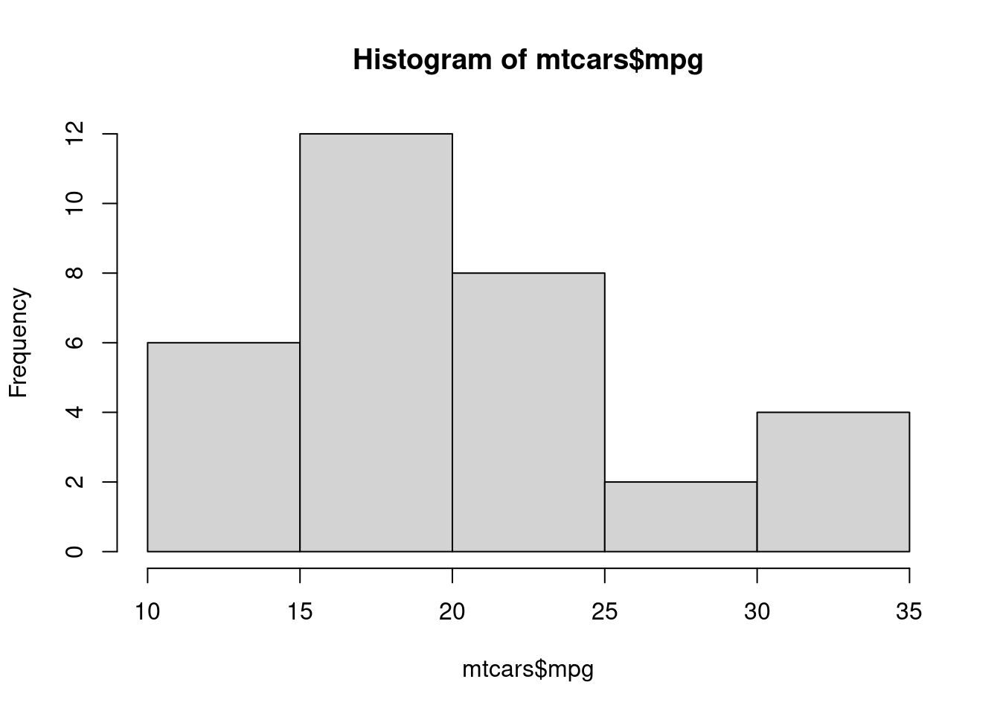
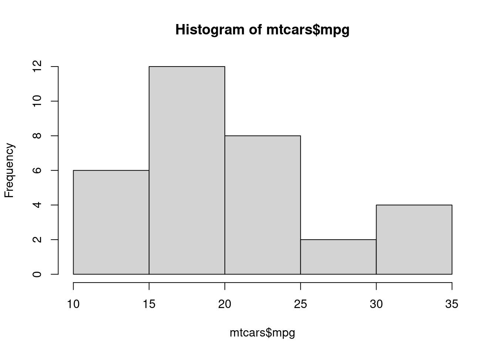

Show me the code
hist(mtcars$mpg)
The document is simply meant to showcase some basic Quarto functions using random examples from a Carpentry workshop at the University of Oslo. The .qmd file with the markdown text and YAML field is found at the Digital Area Studies group Github repository.
The official introduction to Quarto is here.
You should use this little guide with a recent version of RStudio that incorporates Quarto, or with VS Code with the R and Quarto extensions installed.
And you should look at this html document and the .qmd file in the Github repository simultaneously to understand what the markdown code does. And you can copy the markdown text and play with it to see what effects your changes make when you render it.
My name is Jacob Høigilt and I am professor of Arab studies at UiO. My website is here: https://www.hf.uio.no/ikos/english/people/aca/middle-east-studies/temporary/jacobhoi/.
Code
hist(mtcars$mpg)
With this code @fig-cars you create a cross reference that shows up like this in the rendered document: Figure 1. Clicking it takes you to the figure or table you refer to. Note: When you use figure labels together with your figures, such as
#| label: fig-cars
#| fig-cap: figure from mtcars datasetthe figures are automatically numbered according to order of appearance in text.
hist(mtcars$mpg)
Here is a citation, to show how they work: (Butter and Knight 2020). I have used regular bibtex-pandoc standard here. If you write Quarto documents in RStudio, you can do this in a graphic interface and you only need @, without [].)
First, I call a histogram from the R dataset mtcars (the code is found in the source document I linked to at the start of this page).
mtcars <- data.frame(mtcars)Then I call on a number from that data set in a sentence, like this:
The number of observations in the mtcars dataset is nrow(mtcars).
It looks like this in the rendered text: The number of observations in the mtcars dataset is 32.